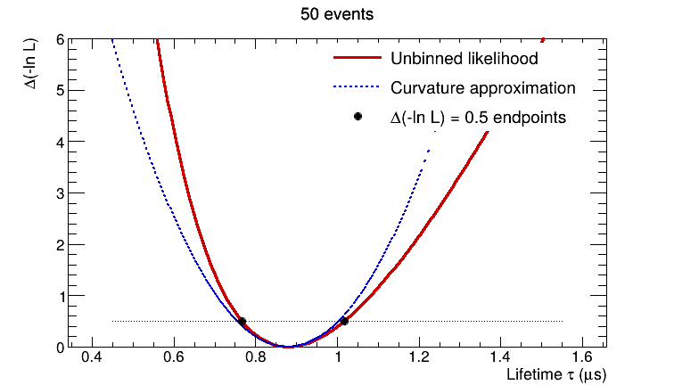
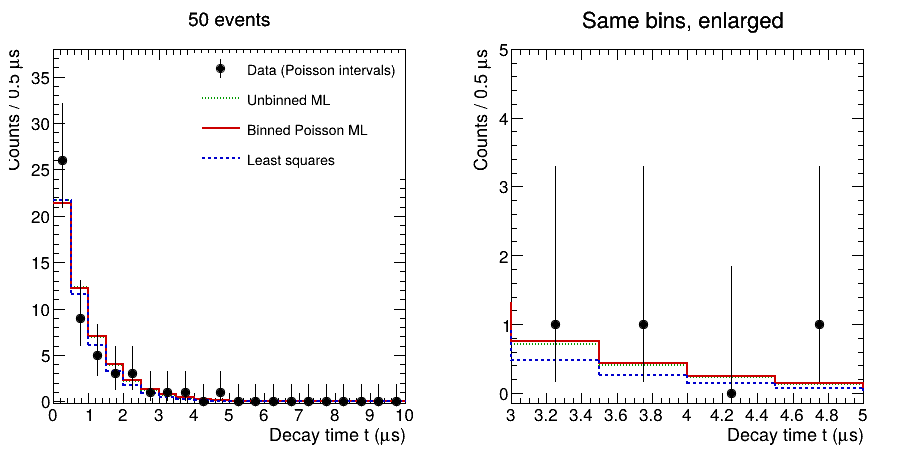
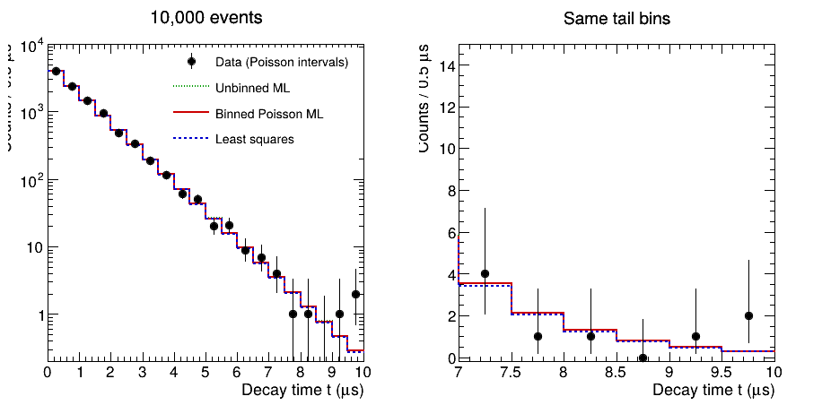

同一寿命样本：maximum likelihood 与 least squares
目录
一个衰变实验记录了逐事件的时间 $t_j$，要从中求平均寿命 $\tau$。本页使用 50 事件与 10,000 事件模拟样本，依次用 unbinned ML、binned Poisson ML 和 least squares 拟合，比较分箱与少计数的影响。方法定义与 ROOT Fit 和 RooFit 教程一致。
运行方法： 下载完整运行包，打开 ML_fit.ipynb 并选择 PyROOT kernel，按顺序运行；或在解压目录执行 root -l -b -q ML_Fit_Comparison.C。网页顶部可切换两种语言，下面的数值与图由代码实际生成。
1. 数据和拟合范围
模拟的真实寿命为 $1\,\mu\mathrm{s}$，时间服从指数分布。使用固定随机种子 12345，依次生成两组样本，并在 0–10 μs 内分成 20 个等宽 bin。三个方法统一使用 $0\le t<10\,\mu\mathrm{s}$ 的事件，代码同时打印区间外的事件数；这一固定样本中没有区间外事件。
import ROOT
import math
from array import array
from IPython.display import display, Image
ROOT.gROOT.SetBatch(True)
ROOT.gStyle.SetOptStat(0)
ROOT.gStyle.SetOptFit(0)
ROOT.gStyle.SetEndErrorSize(0)
ROOT.gStyle.SetErrorX(0)
ROOT.gStyle.SetPadTickX(1)
ROOT.gStyle.SetPadTickY(1)
ROOT.gStyle.SetLabelSize(0.043, "XY")
ROOT.gStyle.SetTitleSize(0.045, "XY")
ROOT.gErrorIgnoreLevel = ROOT.kWarning
ROOT.Math.MinimizerOptions.SetDefaultMinimizer("Minuit2", "Migrad")
ROOT.Math.MinimizerOptions.SetDefaultTolerance(1e-6)
ROOT.gSystem.mkdir("fit_figures", True)
rng = ROOT.TRandom3(12345)
raw_low = [rng.Exp(1.0) for _ in range(50)]
raw_high = [rng.Exp(1.0) for _ in range(10000)]
T, width = 10.0, 0.5
low = [t for t in raw_low if 0 <= t < T]
high = [t for t in raw_high if 0 <= t < T]
h_low = ROOT.TH1D("decay_low", ";Decay time t (#mus);Counts / 0.5 #mus", 20, 0, T)
h_high = ROOT.TH1D("decay_high", ";Decay time t (#mus);Counts / 0.5 #mus", 20, 0, T)
for t in low:
h_low.Fill(t)
for t in high:
h_high.Fill(t)
print(f"Low: {len(low)} accepted, {len(raw_low)-len(low)} outside range")
print(f"High: {len(high)} accepted, {len(raw_high)-len(high)} outside range")
print("Low bin counts:", [int(h_low.GetBinContent(i)) for i in range(1, 21)])gROOT->SetBatch(true);
gStyle->SetOptStat(0);
gStyle->SetOptFit(0);
gStyle->SetEndErrorSize(0);
gStyle->SetErrorX(0);
gStyle->SetPadTickX(1);
gStyle->SetPadTickY(1);
gStyle->SetLabelSize(0.043,"XY");
gStyle->SetTitleSize(0.045,"XY");
gErrorIgnoreLevel = kWarning;
ROOT::Math::MinimizerOptions::SetDefaultMinimizer("Minuit2", "Migrad");
ROOT::Math::MinimizerOptions::SetDefaultTolerance(1e-6);
gSystem->mkdir("fit_figures", true);
std::cout << std::fixed << std::setprecision(6);
TRandom3 rng(12345);
std::vector<double> raw_low, raw_high, low, high;
for (int i=0; i<50; ++i) raw_low.push_back(rng.Exp(1.0));
for (int i=0; i<10000; ++i) raw_high.push_back(rng.Exp(1.0));
const double T=10.0, width=0.5;
for (double t: raw_low) if (0<=t && t<T) low.push_back(t);
for (double t: raw_high) if (0<=t && t<T) high.push_back(t);
auto h_low = new TH1D("decay_low", ";Decay time t (#mus);Counts / 0.5 #mus",20,0,T);
auto h_high = new TH1D("decay_high", ";Decay time t (#mus);Counts / 0.5 #mus",20,0,T);
for (double t: low) h_low->Fill(t);
for (double t: high) h_high->Fill(t);
std::cout << "Low: " << low.size() << " accepted, " << raw_low.size()-low.size() << " outside range\n";
std::cout << "High: " << high.size() << " accepted, " << raw_high.size()-high.size() << " outside range\n";
std::cout << "Low bin counts:";
for (int i=1; i<=20; ++i) std::cout << " " << int(h_low->GetBinContent(i));
std::cout << std::endl;Low: 50 accepted, 0 outside range High: 10000 accepted, 0 outside range Low bin counts: [26, 9, 5, 3, 3, 1, 1, 1, 0, 1, 0, 0, 0, 0, 0, 0, 0, 0, 0, 0]
2. Unbinned ML：直接使用每个时间
在所选区间内使用归一化 PDF，记 $T=10\,\mu\mathrm{s}$：
$$f(t;\tau)=\frac{e^{-t/\tau}}{\tau(1-e^{-T/\tau})},\qquad 0\le t<T.$$
固定观测到的时间后，likelihood 是参数 $\tau$ 的函数。最大化 $L$ 等价于最小化 $F=-\ln L$：
$$L(\tau)=\prod_{j=1}^{N}f(t_j;\tau),\qquad F(\tau)=N\ln\tau+\frac{\sum_j t_j}{\tau}+N\ln(1-e^{-T/\tau}).$$
$\hat\tau$ 是使 $F$ 最小的寿命估计。若完整接受 $t\ge0$，最后一项消失，得到讲义中的 $\hat\tau=\bar t$；本例保留有限区间的归一化，直接数值求最小值。
2.1 参数误差如何算
在最小值附近展开：
$$F(\tau)\simeq F(\hat\tau)+\frac12 F''(\hat\tau)(\tau-\hat\tau)^2, \qquad \sigma_{\hat\tau}\simeq\frac{1}{\sqrt{F''(\hat\tau)}}.$$
这是曲率法给出的对称误差。也可以直接求两端点 $\tau_-,\tau_+$：
$$F(\tau_\pm)-F(\hat\tau)=\frac12, \qquad \hat\tau^{+(\tau_+-\hat\tau)}_{-(\hat\tau-\tau_-)}.$$
这就是讲义中的图解法；实际计算用求根程序，图用来检查曲线与两侧端点。曲线接近抛物线时，两种结果一致；明显不对称时保留上下误差。$\Delta(-\ln L)=0.5$ 给出通常的近似 68.3% 区间，小样本的精确覆盖率不能仅由这一阈值保证。多参数拟合则在扫描一个参数时重新优化其他参数，见 profile 与 MINOS。
下面 TF1 的自变量是待估的 $\tau$，参数槽只存放已知的 $N,\sum t_j,T$。GetMinimumX 求最小值，GetX 求区间端点。
def unbinned_fit(values, name):
n, total = len(values), sum(values)
objective = ROOT.TF1(name, "[0]*log(x)+[1]/x+[0]*log(1-exp(-[2]/x))", 0.05, 5.0)
objective.SetParameters(n, total, T)
estimate = objective.GetMinimumX(0.05, 5.0)
curvature = objective.Derivative2(estimate)
error = 1.0 / math.sqrt(curvature)
target = objective.Eval(estimate) + 0.5
lower = objective.GetX(target, 0.05, estimate)
upper = objective.GetX(target, estimate, 5.0)
return objective, estimate, error, lower, upper
nll_low, tau_low, error_low, lower_low, upper_low = unbinned_fit(low, "nll_low")
nll_high, tau_high, error_high, lower_high, upper_high = unbinned_fit(high, "nll_high")
print(f"Unbinned low: tau = {tau_low:.6f} +/- {error_low:.6f} us (curvature)")
print(f"Unbinned low interval: [{lower_low:.6f}, {upper_low:.6f}] us")
print(f"Unbinned high: tau = {tau_high:.6f} +/- {error_high:.6f} us")
scan = ROOT.TGraph()
parabola = ROOT.TGraph()
for i in range(251):
tt = 0.45 + i*1.10/250
scan.SetPoint(i, tt, nll_low.Eval(tt)-nll_low.Eval(tau_low))
parabola.SetPoint(i, tt, (tt-tau_low)**2/(2*error_low**2))
scan.SetTitle("50 events;Lifetime #tau (#mus);#Delta(-ln L)")
scan.SetLineColor(ROOT.kRed+1)
scan.SetLineWidth(3)
scan.SetMinimum(0)
scan.SetMaximum(6)
parabola.SetLineColor(ROOT.kBlue+1)
parabola.SetLineStyle(2)
parabola.SetLineWidth(2)
c = ROOT.TCanvas("c_scan", "Likelihood and curvature", 760, 460)
scan.Draw("AL")
parabola.Draw("L same")
level = ROOT.TLine(0.45, 0.5, 1.55, 0.5)
level.SetLineStyle(3)
level.Draw()
ends = ROOT.TGraph(2, array("d", [lower_low, upper_low]), array("d", [0.5, 0.5]))
ends.SetMarkerStyle(20)
ends.Draw("P same")
legend = ROOT.TLegend(0.48, 0.66, 0.88, 0.89)
legend.SetBorderSize(0)
legend.AddEntry(scan, "Unbinned likelihood", "l")
legend.AddEntry(parabola, "Curvature approximation", "l")
legend.AddEntry(ends, "#Delta(-ln L) = 0.5 endpoints", "p")
legend.Draw()
c.SaveAs("fit_figures/methods-unbinned-interval.png")
display(Image(filename="fit_figures/methods-unbinned-interval.png"))auto unbinned_fit = [&](const std::vector<double>& values, const char* name) {
double total=std::accumulate(values.begin(), values.end(), 0.0);
auto f=new TF1(name,"[0]*log(x)+[1]/x+[0]*log(1-exp(-[2]/x))",0.05,5.0);
f->SetParameters(values.size(),total,T);
return f;
};
auto nll_low=unbinned_fit(low,"nll_low");
auto nll_high=unbinned_fit(high,"nll_high");
double tau_low=nll_low->GetMinimumX(0.05,5.0), tau_high=nll_high->GetMinimumX(0.05,5.0);
double error_low=1/std::sqrt(nll_low->Derivative2(tau_low));
double error_high=1/std::sqrt(nll_high->Derivative2(tau_high));
double target=nll_low->Eval(tau_low)+0.5;
double lower_low=nll_low->GetX(target,0.05,tau_low), upper_low=nll_low->GetX(target,tau_low,5.0);
std::cout << "Unbinned low: tau = " << tau_low << " +/- " << error_low << " us (curvature)\n";
std::cout << "Unbinned low interval: [" << lower_low << ", " << upper_low << "] us\n";
std::cout << "Unbinned high: tau = " << tau_high << " +/- " << error_high << " us\n";
auto scan=new TGraph(); auto parabola=new TGraph();
for (int i=0; i<=250; ++i) {
double tt=0.45+i*1.10/250;
scan->SetPoint(i,tt,nll_low->Eval(tt)-nll_low->Eval(tau_low));
parabola->SetPoint(i,tt,std::pow(tt-tau_low,2)/(2*error_low*error_low));
}
scan->SetTitle("50 events;Lifetime #tau (#mus);#Delta(-ln L)");
scan->SetLineColor(kRed+1); scan->SetLineWidth(3);
scan->SetMinimum(0); scan->SetMaximum(6);
parabola->SetLineColor(kBlue+1); parabola->SetLineStyle(2); parabola->SetLineWidth(2);
auto c=new TCanvas("c_scan","Likelihood and curvature",760,460);
scan->Draw("AL"); parabola->Draw("L same");
auto level=new TLine(0.45,0.5,1.55,0.5); level->SetLineStyle(3); level->Draw();
double ex[]={lower_low,upper_low}, ey[]={0.5,0.5};
auto ends=new TGraph(2,ex,ey); ends->SetMarkerStyle(20); ends->Draw("P same");
auto legend=new TLegend(0.48,0.66,0.88,0.89); legend->SetBorderSize(0);
legend->AddEntry(scan,"Unbinned likelihood","l");
legend->AddEntry(parabola,"Curvature approximation","l");
legend->AddEntry(ends,"#Delta(-ln L) = 0.5 endpoints","p"); legend->Draw();
c->SaveAs("fit_figures/methods-unbinned-interval.png");Unbinned low: tau = 0.880034 +/- 0.124549 us (curvature) Unbinned low interval: [0.766417, 1.017370] us Unbinned high: tau = 0.997743 +/- 0.010000 us

3. 从逐事件到分箱：概率项从哪里来
事件进入第 $i$ 个 bin 的概率，是 PDF 在该 bin 的积分：
$$p_i(\tau)=\int_{a_i}^{b_i}f(t;\tau)\,dt =\frac{e^{-a_i/\tau}-e^{-b_i/\tau}}{1-e^{-T/\tau}}.$$
同一个 bin 内的事件只留下数量 $n_i$。给定总数 $N=\sum_i n_i$，各事件落入这些 bin 的概率相乘，并计入 $N!/\prod_i n_i!$ 种排列，就得到 multinomial likelihood：
$$L_{\rm bin}(\tau)=\frac{N!}{\prod_i n_i!}\prod_i p_i(\tau)^{n_i}, \qquad \ln L_{\rm bin}=\mathrm{const}+\sum_i n_i\ln p_i.$$
若同时拟合区间内的期望总数 $\nu$，再乘总数的 Poisson 概率：
$$L_{\rm ext,bin}=\operatorname{Pois}(N\mid\nu)L_{\rm bin} =\prod_i\frac{[\nu p_i(\tau)]^{n_i}e^{-\nu p_i(\tau)}}{n_i!}.$$
这就是 ROOT TH1::Fit 的 L 选项使用的 Poisson 连乘。这里 $\nu$ 独立于 $\tau$ 且自由拟合，因此 $\hat\nu=N$，寿命估计与上述 multinomial 拟合相同。Binned 描述数据是否分箱；extended 描述是否把总数概率放进 likelihood。
3.1 在 ROOT 中拟合
预期 bin 计数为 $\nu_i=\nu p_i$。I 选项计算的是 TF1 的 bin 积分除以 bin 宽度，因此这里让 TF1 表示 $w\nu f(t;\tau)$，$w=0.5\,\mu\mathrm{s}$。这样 I 返回的正好是 $\nu_i$。R 使用函数范围，S 返回完整结果，Q0 减少输出并关闭自动画图。
def count_model(name, n):
model = ROOT.TF1(name, "[2]*[0]*exp(-x/[1])/([1]*(1-exp(-[3]/[1])))", 0, T)
model.SetParNames("nu", "tau", "width", "T")
model.SetParameters(n, 1.0, width, T)
model.SetParLimits(0, 0.01, 10*n)
model.SetParLimits(1, 0.05, 5.0)
model.FixParameter(2, width)
model.FixParameter(3, T)
return model
poisson_low = count_model("poisson_low", len(low))
r_poisson_low = h_low.Fit(poisson_low, "LIRSQ0")
print(f"Poisson low: tau = {poisson_low.GetParameter(1):.6f} +/- {poisson_low.GetParError(1):.6f} us")
print(f"Poisson low yield = {poisson_low.GetParameter(0):.6f}; status = {int(r_poisson_low)}")
# Independently minimize the multinomial expression for these equal-width bins.
edge_sum = sum(h_low.GetBinContent(i)*h_low.GetBinLowEdge(i) for i in range(1, 21))
binned_nll = ROOT.TF1("binned_nll", "[0]*log(1-exp(-[3]/x))-[0]*log(1-exp(-[2]/x))+[1]/x", 0.05, 5.0)
binned_nll.SetParameters(len(low), edge_sum, width, T)
tau_multinomial = binned_nll.GetMinimumX(0.05, 5.0)
print(f"Multinomial low: tau = {tau_multinomial:.6f} us")auto count_model = [&](const char* name, double n) {
auto model=new TF1(name,"[2]*[0]*exp(-x/[1])/([1]*(1-exp(-[3]/[1])))",0,T);
model->SetParNames("nu","tau","width","T");
model->SetParameters(n,1.0,width,T);
model->SetParLimits(0,0.01,10*n); model->SetParLimits(1,0.05,5.0);
model->FixParameter(2,width); model->FixParameter(3,T);
return model;
};
auto poisson_low=count_model("poisson_low",low.size());
auto r_poisson_low=h_low->Fit(poisson_low,"LIRSQ0");
std::cout << "Poisson low: tau = " << poisson_low->GetParameter(1) << " +/- " << poisson_low->GetParError(1) << " us\n";
std::cout << "Poisson low yield = " << poisson_low->GetParameter(0) << "; status = " << int(r_poisson_low) << "\n";
double edge_sum=0;
for (int i=1; i<=20; ++i) edge_sum+=h_low->GetBinContent(i)*h_low->GetBinLowEdge(i);
auto binned_nll=new TF1("binned_nll","[0]*log(1-exp(-[3]/x))-[0]*log(1-exp(-[2]/x))+[1]/x",0.05,5.0);
binned_nll->SetParameters(low.size(),edge_sum,width,T);
double tau_multinomial=binned_nll->GetMinimumX(0.05,5.0);
std::cout << "Multinomial low: tau = " << tau_multinomial << " us\n";Poisson low: tau = 0.897039 +/- 0.128525 us Poisson low yield = 50.000000; status = 0 Multinomial low: tau = 0.897039 us
4. 少计数时的 least squares 与空 bin
普通未加权计数 histogram 的默认 bin 误差为 $\sqrt{n_i}$。ROOT 默认 least-squares 拟合于是最小化
$$\chi^2=\sum_{i:n_i>0}\frac{[n_i-\nu_i(\nu,\tau)]^2}{n_i}.$$
$n_i=0$ 的 bin 误差为零，默认被排除。Poisson likelihood 则保留它：
$$\operatorname{Pois}(0\mid\nu_i)=e^{-\nu_i},\qquad -\ln\operatorname{Pois}(0\mid\nu_i)=\nu_i.$$
因此空 bin 会约束模型在该处的预测。下面的固定数据在 4.0–4.5 μs 为零计数，两侧 bin 都有事件，右图放大这一段。少计数问题还包括非零 bin 的 $\sqrt{n_i}$ 误差近似不佳；只补一个空 bin 的误差并不能解决。
ls_low = count_model("ls_low", len(low))
r_ls_low = h_low.Fit(ls_low, "IRSQ0")
print(f"Least squares low: tau = {ls_low.GetParameter(1):.6f} +/- {ls_low.GetParError(1):.6f} us")
print(f"Least squares low: status = {int(r_ls_low)}, used bins = {r_ls_low.Ndf()+2}")
print(f"Poisson low: used bins = {r_poisson_low.Ndf()+2}")
# Model curves show the actual expected count in each bin.
def expected_bins(name, model):
expected = ROOT.TH1D(name, "", 20, 0, T)
for i in range(1, 21):
a, b = expected.GetBinLowEdge(i), expected.GetBinLowEdge(i+1)
expected.SetBinContent(i, model.Integral(a, b)/width)
expected.SetLineWidth(2)
return expected
unbinned_low = count_model("unbinned_low_counts", len(low))
unbinned_low.SetParameter(1, tau_low)
curves_low = [expected_bins("expected_low_"+str(i), model)
for i, model in enumerate([unbinned_low, poisson_low, ls_low])]
for curve, color, style in zip(curves_low, [ROOT.kGreen+2, ROOT.kRed+1, ROOT.kBlue+1], [3, 1, 2]):
curve.SetLineColor(color)
curve.SetLineStyle(style)
# Display errors are Poisson intervals; the LS fit above used its original sqrt(n) errors.
display_low = h_low.Clone("display_low")
display_low.SetBinErrorOption(ROOT.TH1.kPoisson)
display_low.SetMarkerStyle(20)
display_low.SetMarkerColor(ROOT.kBlack)
display_low.SetLineColor(ROOT.kBlack)
legend_low = ROOT.TLegend(0.42, 0.62, 0.90, 0.89)
legend_low.SetBorderSize(0)
legend_low.AddEntry(display_low, "Data (Poisson intervals)", "pe")
for curve, name in zip(curves_low, ["Unbinned ML", "Binned Poisson ML", "Least squares"]):
legend_low.AddEntry(curve, name, "l")
c = ROOT.TCanvas("c_low_comparison", "Same 50 events", 920, 480)
c.Divide(2, 1)
c.cd(1)
display_low.SetTitle("50 events;Decay time t (#mus);Counts / 0.5 #mus")
display_low.SetMinimum(-0.2)
display_low.SetMaximum(38)
display_low.Draw("E0")
for curve in curves_low:
curve.Draw("HIST same")
display_low.Draw("E0 same")
legend_low.Draw()
c.cd(2)
zoom_low = display_low.Clone("zoom_low")
zoom_low.SetTitle("Same bins, enlarged;Decay time t (#mus);Counts / 0.5 #mus")
zoom_low.GetXaxis().SetRangeUser(3.0, 5.0)
zoom_low.SetMinimum(-0.15)
zoom_low.SetMaximum(5)
zoom_low.Draw("E0")
for curve in curves_low:
curve.Draw("HIST same")
zoom_low.Draw("E0 same")
c.SaveAs("fit_figures/methods-low-counts.png")
display(Image(filename="fit_figures/methods-low-counts.png"))auto ls_low=count_model("ls_low",low.size());
auto r_ls_low=h_low->Fit(ls_low,"IRSQ0");
std::cout << "Least squares low: tau = " << ls_low->GetParameter(1) << " +/- " << ls_low->GetParError(1) << " us\n";
std::cout << "Least squares low: status = " << int(r_ls_low) << ", used bins = " << r_ls_low->Ndf()+2 << "\n";
std::cout << "Poisson low: used bins = " << r_poisson_low->Ndf()+2 << "\n";
auto expected_bins = [&](const char* name, TF1* model) {
auto expected=new TH1D(name,"",20,0,T);
for (int i=1; i<=20; ++i) {
double a=expected->GetBinLowEdge(i), b=expected->GetBinLowEdge(i+1);
expected->SetBinContent(i,model->Integral(a,b)/width);
}
expected->SetLineWidth(2);
return expected;
};
auto unbinned_low=count_model("unbinned_low_counts",low.size()); unbinned_low->SetParameter(1,tau_low);
std::vector<TH1D*> curves_low={expected_bins("expected_low_0",unbinned_low),expected_bins("expected_low_1",poisson_low),expected_bins("expected_low_2",ls_low)};
int colors[]={kGreen+2,kRed+1,kBlue+1}, styles[]={3,1,2};
const char* names[]={"Unbinned ML","Binned Poisson ML","Least squares"};
for (int i=0; i<3; ++i) {curves_low[i]->SetLineColor(colors[i]); curves_low[i]->SetLineStyle(styles[i]);}
auto display_low=static_cast<TH1D*>(h_low->Clone("display_low"));
display_low->SetBinErrorOption(TH1::kPoisson); display_low->SetMarkerStyle(20);
display_low->SetMarkerColor(kBlack); display_low->SetLineColor(kBlack);
auto legend_low=new TLegend(0.42,0.62,0.90,0.89); legend_low->SetBorderSize(0);
legend_low->AddEntry(display_low,"Data (Poisson intervals)","pe");
for (int i=0; i<3; ++i) legend_low->AddEntry(curves_low[i],names[i],"l");
c=new TCanvas("c_low_comparison","Same 50 events",920,480); c->Divide(2,1); c->cd(1);
display_low->SetTitle("50 events;Decay time t (#mus);Counts / 0.5 #mus");
display_low->SetMinimum(-0.2); display_low->SetMaximum(38); display_low->Draw("E0");
for (auto curve:curves_low) curve->Draw("HIST same");
display_low->Draw("E0 same"); legend_low->Draw(); c->cd(2);
auto zoom_low=static_cast<TH1D*>(display_low->Clone("zoom_low"));
zoom_low->SetTitle("Same bins, enlarged;Decay time t (#mus);Counts / 0.5 #mus");
zoom_low->GetXaxis()->SetRangeUser(3.0,5.0); zoom_low->SetMinimum(-0.15); zoom_low->SetMaximum(5);
zoom_low->Draw("E0"); for (auto curve:curves_low) curve->Draw("HIST same"); zoom_low->Draw("E0 same");
c->SaveAs("fit_figures/methods-low-counts.png");Least squares low: tau = 0.788332 +/- 0.187743 us Least squares low: status = 0, used bins = 9 Poisson low: used bins = 20

图中的点和误差条统一表示计数及其约 68.3% Poisson 区间；它们用于显示。Poisson 拟合使用 $n_i$ 和 $\nu_i$，不把图上的误差条作为权重。Least-squares 拟合在设置绘图误差之前完成，使用的是上式的 $\sqrt{n_i}$。
同一批事件分箱后，bin 内的位置不再参与拟合，因此 unbinned 与 binned 的结果可以不同。一次样本中某个估计离生成值更近，并不能证明该方法偏差更小。
5. 10,000 事件：高计数比较
增加计数后，主要约束寿命的 bin 更接近 Gaussian 分布，Poisson ML 与 least squares 的结果通常更接近。但尾部仍可能稀疏，不能只看总事件数。本例的 8.5–9.0 μs bin 为空，两侧都有计数；右图保持线性纵轴，使这个空 bin 可见。
poisson_high = count_model("poisson_high", len(high))
ls_high = count_model("ls_high", len(high))
r_poisson_high = h_high.Fit(poisson_high, "LIRSQ0")
r_ls_high = h_high.Fit(ls_high, "IRSQ0")
for name, model, result in [("Poisson high", poisson_high, r_poisson_high),
("Least squares high", ls_high, r_ls_high)]:
print(f"{name}: tau = {model.GetParameter(1):.6f} +/- {model.GetParError(1):.6f} us")
print(f" status = {int(result)}, covariance status = {result.CovMatrixStatus()}")
unbinned_high = count_model("unbinned_high_counts", len(high))
unbinned_high.SetParameter(1, tau_high)
curves_high = [expected_bins("expected_high_"+str(i), model)
for i, model in enumerate([unbinned_high, poisson_high, ls_high])]
for curve, color, style in zip(curves_high, [ROOT.kGreen+2, ROOT.kRed+1, ROOT.kBlue+1], [3, 1, 2]):
curve.SetLineColor(color)
curve.SetLineStyle(style)
display_high = h_high.Clone("display_high")
display_high.SetBinErrorOption(ROOT.TH1.kPoisson)
display_high.SetMarkerStyle(20)
display_high.SetMarkerColor(ROOT.kBlack)
display_high.SetLineColor(ROOT.kBlack)
legend_high = ROOT.TLegend(0.40, 0.63, 0.90, 0.89)
legend_high.SetBorderSize(0)
legend_high.AddEntry(display_high, "Data (Poisson intervals)", "pe")
for curve, name in zip(curves_high, ["Unbinned ML", "Binned Poisson ML", "Least squares"]):
legend_high.AddEntry(curve, name, "l")
c = ROOT.TCanvas("c_high_comparison", "Same 10000 events", 920, 480)
c.Divide(2, 1)
c.cd(1).SetLogy()
display_high.SetTitle("10,000 events;Decay time t (#mus);Counts / 0.5 #mus")
display_high.SetMinimum(0.2)
display_high.SetMaximum(10000)
display_high.Draw("E0")
for curve in curves_high:
curve.Draw("HIST same")
display_high.Draw("E0 same")
legend_high.Draw()
c.cd(2)
zoom_high = display_high.Clone("zoom_high")
zoom_high.SetTitle("Same tail bins;Decay time t (#mus);Counts / 0.5 #mus")
zoom_high.GetXaxis().SetRangeUser(7.0, 10.0)
zoom_high.SetMinimum(-0.2)
zoom_high.SetMaximum(15)
zoom_high.Draw("E0")
for curve in curves_high:
curve.Draw("HIST same")
zoom_high.Draw("E0 same")
c.SaveAs("fit_figures/methods-high-counts.png")
display(Image(filename="fit_figures/methods-high-counts.png"))auto poisson_high=count_model("poisson_high",high.size()), ls_high=count_model("ls_high",high.size());
auto r_poisson_high=h_high->Fit(poisson_high,"LIRSQ0");
auto r_ls_high=h_high->Fit(ls_high,"IRSQ0");
std::cout << "Poisson high: tau = " << poisson_high->GetParameter(1) << " +/- " << poisson_high->GetParError(1) << " us\n";
std::cout << " status = " << int(r_poisson_high) << ", covariance status = " << r_poisson_high->CovMatrixStatus() << "\n";
std::cout << "Least squares high: tau = " << ls_high->GetParameter(1) << " +/- " << ls_high->GetParError(1) << " us\n";
std::cout << " status = " << int(r_ls_high) << ", covariance status = " << r_ls_high->CovMatrixStatus() << "\n";
auto unbinned_high=count_model("unbinned_high_counts",high.size()); unbinned_high->SetParameter(1,tau_high);
std::vector<TH1D*> curves_high={expected_bins("expected_high_0",unbinned_high),expected_bins("expected_high_1",poisson_high),expected_bins("expected_high_2",ls_high)};
for (int i=0; i<3; ++i) {curves_high[i]->SetLineColor(colors[i]); curves_high[i]->SetLineStyle(styles[i]);}
auto display_high=static_cast<TH1D*>(h_high->Clone("display_high"));
display_high->SetBinErrorOption(TH1::kPoisson); display_high->SetMarkerStyle(20);
display_high->SetMarkerColor(kBlack); display_high->SetLineColor(kBlack);
auto legend_high=new TLegend(0.40,0.63,0.90,0.89); legend_high->SetBorderSize(0);
legend_high->AddEntry(display_high,"Data (Poisson intervals)","pe");
for (int i=0; i<3; ++i) legend_high->AddEntry(curves_high[i],names[i],"l");
c=new TCanvas("c_high_comparison","Same 10000 events",920,480); c->Divide(2,1); c->cd(1)->SetLogy();
display_high->SetTitle("10,000 events;Decay time t (#mus);Counts / 0.5 #mus");
display_high->SetMinimum(0.2); display_high->SetMaximum(10000); display_high->Draw("E0");
for (auto curve:curves_high) curve->Draw("HIST same"); display_high->Draw("E0 same"); legend_high->Draw();
c->cd(2); auto zoom_high=static_cast<TH1D*>(display_high->Clone("zoom_high"));
zoom_high->SetTitle("Same tail bins;Decay time t (#mus);Counts / 0.5 #mus");
zoom_high->GetXaxis()->SetRangeUser(7,10); zoom_high->SetMinimum(-0.2); zoom_high->SetMaximum(15);
zoom_high->Draw("E0"); for (auto curve:curves_high) curve->Draw("HIST same"); zoom_high->Draw("E0 same");
c->SaveAs("fit_figures/methods-high-counts.png");Poisson high: tau = 0.996930 +/- 0.010097 us status = 0, covariance status = 3 Least squares high: tau = 0.991642 +/- 0.009945 us status = 0, covariance status = 3

以上 Poisson 与 least-squares 输出的 +/- 是局部曲率误差；检查 status 和协方差状态后，若要获取 Poisson 拟合的非对称误差，可在同一个模型的选项中加入 E，再读取 LowerError(1)、UpperError(1)。相关步骤见 ROOT Fit 的误差计算。
6. Guideline
- 逐事件数据还在，PDF 可计算： 通常优先 unbinned ML；画 histogram 检查模型不要求把拟合也改成 binned。
- 数据已经是计数谱，或需要以 histogram 为输入： 使用 binned Poisson ML，保留空 bin，并计算 bin 内积分。分箱过粗会损失形状信息。
- 测量值带有已知、近似 Gaussian 的误差： 使用 weighted least squares。对于事件计数，即使总数很大，也先查看每个 bin 的计数与尾部情况；无需为了高统计而从 Poisson ML 切换到 least squares。
- 还要估计产额： 在同一模型中使用 extended ML。若归一化独立且自由，产额拟合不会额外改变形状估计；信号与本底的多参数例子见 RooFit 教程。
ROOT 的具体选项与空 bin 行为可查 TH1::Fit 官方说明。